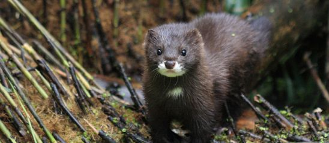
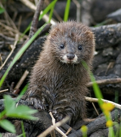

Durata de viata: Pana la 10 de ani

Unde traieste (mediu de viata): Rauri,lacuri,delte
Dieta: Carnivore
Clasa: Mamifere
Nume stiintific: Mustela lutreola
Ce mananca (mancarea principala): Pesti ,broaste , insecte
Predatori: Oameni
In trecut, nurca-europeana era foarte raspandita; a trait pana recent inclusiv in Maramures. In prezent, in Romania mai traiesc maximum 1.000 de nurci-europene, exclusiv in Delta Dunarii - ultima arie de supravietuire pentru nurca-europeana, in afara Rusiei.
Curiozitati:
- Nurca europeana este un mamifer carnivor care traieste in regiunile mlastinoase din centrul si nordul Europei.
- Are lungimea corpului de 30-40 cm, coada de 12-19 cm si greutatea de 500-800 g. 
- Blana sa este foarte apreciata (este moale, deasa si impermeabila) ceea ce a provocat distrugerea unui numar mare de exemplare in Europa Centrala.
- Are corpul suplu, alungit, acoperit cu blana de culoare maro-inchis pana la negru, cu o margine ingusta alba la buza superioara si barbie.
- Isi face adapostul in stuf, in scorburi sau vizuini, intotdeauna in apropierea apelor si se hraneste cu animale de apa, reptile, broaste, pesti, sobolani, pasari acvatice, crustacee si pasari domestice.
- Traieste solitar, doar in sezonul de reproducere pot fi observate in perechi. 
- Perioada de imperechere este in lunile ianuarie si februarie, femela are o gestatie de 35-72 de zile, dupa care naste 2-7 pui de regula prin lunile martie-iunie.
- Este o specie pe cale de disparitie, datorita distrugerii habitatului natural, vanatului excesiv si poluarii mediului.
- Puii sunt alaptati timp de 10 saptamani si intarcati la sfarsitul verii. Exemplarele tinere ajung la maturitatea sexuala la varsta de 9-10 luni.
- Nurca europeana face parte din ordinul Carnivora, familia Mustelidae.